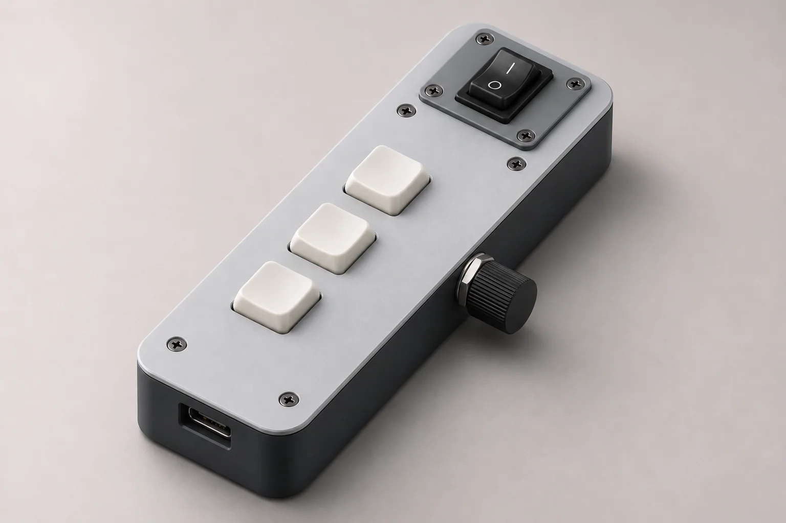

H20 / 硬件团队 · 实体展示
Vibe Remote——AI 编程交互手柄
档案封面选自交互手柄效果图。
项目组提供的手柄图为设计效果图。
Vibe Remote 是一款面向 Vibe Coding场景设计的单手蓝牙控制器。它将输入、发送或继续、取消、页面滚动和面板切换等常用操作，映射到三个按键和一个可按压的滚轮上，目标是在浏览代码、审阅修改和等待 AI 执行任务时，减少键盘与鼠标之间的切换（让我们畅快摸鱼）。

 返回硬件项目索引
返回硬件项目索引档案封面选自交互手柄效果图。
项目组提供的手柄图为设计效果图。
Vibe Remote 是一款面向 Vibe Coding场景设计的单手蓝牙控制器。它将输入、发送或继续、取消、页面滚动和面板切换等常用操作，映射到三个按键和一个可按压的滚轮上，目标是在浏览代码、审阅修改和等待 AI 执行任务时，减少键盘与鼠标之间的切换（让我们畅快摸鱼）。
